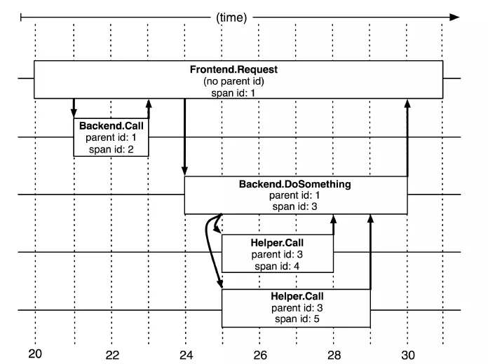

Spring Cloud之Sleuth链路追踪 1. 问题 随着微服务架构的流行，服务按照不同的维度进行拆分 ，一次请求往往需要涉及到多个服务。互联网应用构建在不同的软件模块集上 ，这些软件模块，有可能是由不同的团队开发、可能使用不同的编程语言来实现、有可能布在了几千台服务器，横跨多个不同的数据中心 。因此，就需要一些可以帮助理解系统行为、用于分析性能问题的工具，以便发生故障的时候，能够快速定位和解决问题。在复杂的微服务架构系统中，几乎每一个前端请求都会形成一个复杂的分布式服务调用链路 。一个请求完整调用链可能如下图所示：
随着服务的越来越多，对调用链的分析会越来越复杂。它们之间的调用关系也许如下：
在业务规模不断增大、服务不断增多以及频繁变更的情况下，面对复杂的调用链路就带来一系列问题：
如何快速发现问题？
如何判断故障的影响范围？
如何梳理服务依赖以及依赖的合理性？
如何分析链路性能问题以及实时容量规划？
而链路追踪的出现正是为了解决这种问题，它可以在复杂的服务调用中定位问题，还可以在新人加入后台团队之后，让其清楚地知道自己所负责的服务在哪一环。
除此之外，如果某个接口突然耗时增加，也不必再逐个服务查询耗时情况，我们可以直观地分析出服务的性能瓶颈，方便在流量激增的情况下精准合理地扩容。
2. 什么是链路追踪？ 链路追踪一词是在2010年提出的，当时谷歌发布了一篇Dapper, a Large-Scale Distributed Systems Tracing Infrastructure – Google Research 论文，介绍了谷歌自研的分布式链路追踪的实现原理，还介绍了他们是怎么低成本实现对应用透明的。
其实Dapper一开始只是一个独立的调用链路追踪系统，后来逐渐演化成了监控平台，并且基于监控平台孕育出了很多工具，比如实时预警、过载保护、指标数据查询等。
除了谷歌的Dapper，还有一些其他比较有名的产品，比如阿里的鹰眼、大众点评的CAT、Twitter的Zipkin、Naver（著名社交软件LINE的母公司）的pinpoint以及国产开源的skywalking等。
3. 什么是Sleuth? Spring Cloud Sleuth 为 Spring Cloud 实现了分布式跟踪解决方案。兼容 Zipkin，HTrace 和其他基于日志的追踪系统，例如 ELK（Elasticsearch 、Logstash、 Kibana）。
Spring Cloud Sleuth 提供了以下功能：
链路追踪：通过 Sleuth 可以很清楚的看出一个请求都经过了那些服务，可以很方便的理清服务间的调用关系等。性能分析：通过 Sleuth 可以很方便的看出每个采样请求的耗时，分析哪些服务调用比较耗时，当服务调用的耗时随着请求量的增大而增大时， 可以对服务的扩容提供一定的提醒。数据分析，优化链路：对于频繁调用一个服务，或并行调用等，可以针对业务做一些优化措施。可视化错误：对于程序未捕获的异常，可以配合 Zipkin 查看。
4. 专业术语 Spring Cloud Sleuth采用了Dapper 的术语。
Span 基本工作单元 ，一次链路调用（可以是RPC，DB等没有特定的限制）创建一个span，通过一个64位ID标识它，uuid较为方便，span中还有其他的数据，例如描述信息 ，时间戳 ，key-value对的（Annotation）tag信息，parent_id等,其中parent-id可以表示span调用链路来源。

上图说明了span在一次大的跟踪过程中是什么样的。Dapper记录了span名称，以及每个span的ID和父ID，以重建在一次追踪过程中不同span之间的关系 。如果一个span没有父ID被称为root span。所有span都挂在一个特定的跟踪上，也共用一个跟踪id 。
Span数据结构
1 2 3 4 5 6 7 8 type Span struct { TraceID int64 Name string ID int64 ParentID int64 Annotation []Annotation Debug bool }
Trace 类似于 树结构的Span集合 ，一个Trace表示一次完整的链路跟踪，从请求到服务器开始，服务器返回response结束，跟踪每次rpc调用的耗时，存在唯一标识trace_id。比如：你运行的分布式大数据存储一次Trace就由你的一次请求组成。
举个例子：客户端调用服务 A 、服务 B 、服务 C 、服务 F，而每个服务例如 C 就是一个 Span，如果在服务 C 中另起线程调用了 D，那么 D 就是 C 的子 Span，如果在服务 D 中另起线程调用了 E，那么 E 就是 D 的子 Span，这个 C -> D -> E 的链路就是一条 Trace。如果链路追踪系统做好了，链路数据有了，借助前端解析和渲染工具，可以达到下图中的效果：
Annotation 注解，用来记录请求特定事件相关信息（例如时间），一个span中会有多个annotation注解描述 。通常包含四个注解信息：
cs ：Client Start，表示客户端发起请求sr ：Server Receive，表示服务端收到请求ss ：Server Send，表示服务端完成处理，并将结果发送给客户端cr ：Client Received，表示客户端获取到服务端返回信息
Annotation数据结构：
1 2 3 4 5 6 type Annotation struct { Timestamp int64 Value string Host Endpoint Duration int32 }
5. 实现原理 如果想知道一个接口在哪个环节出现了问题，就必须清楚该接口调用了哪些服务，以及调用的顺序，如果把这些服务串起来，看起来就像链条一样，我们称其为调用链 。
想要实现调用链，就要为每次调用做个标识，然后将服务按标识大小排列，可以更清晰地看出调用顺序，我们暂且将该标识命名为spanid。
实际场景中，我们需要知道某次请求调用的情况，所以只有 spanid 还不够，得为每次请求做个唯一标识，这样才能根据标识查出本次请求调用的所有服务，而这个标识我们命名为 traceid。
现在根据 spanid 可以轻易地知道被调用服务的先后顺序，但无法体现调用的层级关系，正如下图所示，多个服务可能是逐级调用的链条，也可能是同时被同一个服务调用。
所以应该每次都记录下是谁调用的，我们用 parentid 作为这个标识的名字。
到现在，已经知道调用顺序和层级关系了，但是接口出现问题后，还是不能找到出问题的环节，如果某个服务有问题，那个被调用执行的服务一定耗时很长，要想计算出耗时，上述的三个标识还不够，还需要加上时间戳，时间戳可以更精细一点，精确到微秒级。
只记录发起调用时的时间戳还算不出耗时，要记录下服务返回时的时间戳，有始有终才能算出时间差，既然返回的也记了，就把上述的三个标识都记一下吧，不然区分不出是谁的时间戳。
虽然能计算出从服务调用到服务返回的总耗时，但是这个时间包含了服务的执行时间和网络延迟，有时候我们需要区分出这两类时间以方便做针对性优化。那如何计算网络延迟呢？我们可以把调用和返回的过程分为以下四个事件。
Client Sent 简称 cs，客户端发起调用请求到服务端。Server Received 简称 sr，指服务端接收到了客户端的调用请求。Server Sent 简称 ss，指服务端完成了处理，准备将信息返给客户端。Client Received 简称 cr，指客户端接收到了服务端的返回信息。
假如在这四个事件发生时记录下时间戳，就可以轻松计算出耗时，比如 sr 减去 cs 就是调用时的网络延迟 ，ss 减去 sr 就是服务执行时间 ，cr 减去 ss 就是服务响应的延迟 ，cr 减 cs 就是整个服务调用执行的时间 。
其实 span 内除了记录这几个参数之外，还可以记录一些其他信息，比如发起调用服务名称、被调服务名称、返回结果、IP、调用服务的名称等，最后，我们再把相同 parentid 的 span 信息合成一个大的 span 块，就完成了一个完整的调用链。
6. 环境准备
7. 入门案例 添加依赖 在需要进行链路追踪的项目中（服务网关、商品服务、订单服务）添加 spring-cloud-starter-sleuth 依赖。
1 2 3 4 5 <dependency > <groupId > org.springframework.cloud</groupId > <artifactId > spring-cloud-starter-sleuth</artifactId > </dependency >
日志记录 在需要链路追踪的项目中添加 logback.xml 日志文件，内容如下（logback 日志的输出级别需要是 DEBUG 级别）：
注意修改 <property name="log.path" value="${catalina.base}/gateway-server/logs"/> 中项目名称。
1 2 3 4 5 6 7 8 9 10 11 12 13 14 15 16 17 18 19 20 21 22 23 24 25 26 27 28 29 30 31 32 33 34 35 36 37 38 39 40 41 42 43 44 45 46 47 48 49 50 51 52 53 54 55 56 57 58 59 60 61 62 63 64 65 66 67 68 69 70 71 72 73 74 75 76 77 78 79 80 81 82 83 84 85 86 87 88 89 90 91 92 93 94 95 96 97 98 99 100 101 102 103 104 105 106 107 108 109 110 111 112 113 114 115 116 117 118 119 120 121 122 123 124 125 126 127 128 129 130 131 132 133 134 135 136 137 138 139 140 141 142 143 144 145 146 147 148 149 150 151 152 153 154 155 156 157 158 159 160 <?xml version="1.0" encoding="UTF-8"?> <configuration scan ="true" scanPeriod ="10 seconds" > <contextName > my_logback</contextName > <property name ="log.path" value ="${catalina.base}/gateway-server/logs" /> <springProperty scope ="context" name ="applicationName" source ="spring.application.name" defaultValue ="localhost" /> <property name ="LOG_PATTERN" value ="%d{yyyy-MM-dd HH:mm:ss.SSS} [${applicationName},%X{X-B3-TraceId:-},%X{X-B3-SpanId:-}] [%thread] %-5level %logger{50} - %msg%n" /> <appender name ="CONSOLE" class ="ch.qos.logback.core.ConsoleAppender" > <filter class ="ch.qos.logback.classic.filter.ThresholdFilter" > <level > DEBUG</level > </filter > <encoder > <pattern > ${LOG_PATTERN}</pattern > <charset > UTF-8</charset > </encoder > </appender > <appender name ="DEBUG_FILE" class ="ch.qos.logback.core.rolling.RollingFileAppender" > <file > ${log.path}/log_debug.log</file > <encoder > <pattern > ${LOG_PATTERN}</pattern > <charset > UTF-8</charset > </encoder > <rollingPolicy class ="ch.qos.logback.core.rolling.TimeBasedRollingPolicy" > <fileNamePattern > ${log.path}/debug/log-debug-%d{yyyy-MM-dd}.%i.log</fileNamePattern > <timeBasedFileNamingAndTriggeringPolicy class ="ch.qos.logback.core.rolling.SizeAndTimeBasedFNATP" > <maxFileSize > 100MB</maxFileSize > </timeBasedFileNamingAndTriggeringPolicy > <maxHistory > 15</maxHistory > </rollingPolicy > <filter class ="ch.qos.logback.classic.filter.LevelFilter" > <level > DEBUG</level > <onMatch > ACCEPT</onMatch > <onMismatch > DENY</onMismatch > </filter > </appender > <appender name ="INFO_FILE" class ="ch.qos.logback.core.rolling.RollingFileAppender" > <file > ${log.path}/log_info.log</file > <encoder > <pattern > ${LOG_PATTERN}</pattern > <charset > UTF-8</charset > </encoder > <rollingPolicy class ="ch.qos.logback.core.rolling.TimeBasedRollingPolicy" > <fileNamePattern > ${log.path}/info/log-info-%d{yyyy-MM-dd}.%i.log</fileNamePattern > <timeBasedFileNamingAndTriggeringPolicy class ="ch.qos.logback.core.rolling.SizeAndTimeBasedFNATP" > <maxFileSize > 100MB</maxFileSize > </timeBasedFileNamingAndTriggeringPolicy > <maxHistory > 15</maxHistory > </rollingPolicy > <filter class ="ch.qos.logback.classic.filter.LevelFilter" > <level > INFO</level > <onMatch > ACCEPT</onMatch > <onMismatch > DENY</onMismatch > </filter > </appender > <appender name ="WARN_FILE" class ="ch.qos.logback.core.rolling.RollingFileAppender" > <file > ${log.path}/log_warn.log</file > <encoder > <pattern > ${LOG_PATTERN}</pattern > <charset > UTF-8</charset > </encoder > <rollingPolicy class ="ch.qos.logback.core.rolling.TimeBasedRollingPolicy" > <fileNamePattern > ${log.path}/warn/log-warn-%d{yyyy-MM-dd}.%i.log</fileNamePattern > <timeBasedFileNamingAndTriggeringPolicy class ="ch.qos.logback.core.rolling.SizeAndTimeBasedFNATP" > <maxFileSize > 100MB</maxFileSize > </timeBasedFileNamingAndTriggeringPolicy > <maxHistory > 15</maxHistory > </rollingPolicy > <filter class ="ch.qos.logback.classic.filter.LevelFilter" > <level > WARN</level > <onMatch > ACCEPT</onMatch > <onMismatch > DENY</onMismatch > </filter > </appender > <appender name ="ERROR_FILE" class ="ch.qos.logback.core.rolling.RollingFileAppender" > <file > ${log.path}/log_error.log</file > <encoder > <pattern > ${LOG_PATTERN}</pattern > <charset > UTF-8</charset > </encoder > <rollingPolicy class ="ch.qos.logback.core.rolling.TimeBasedRollingPolicy" > <fileNamePattern > ${log.path}/error/log-error-%d{yyyy-MM-dd}.%i.log</fileNamePattern > <timeBasedFileNamingAndTriggeringPolicy class ="ch.qos.logback.core.rolling.SizeAndTimeBasedFNATP" > <maxFileSize > 100MB</maxFileSize > </timeBasedFileNamingAndTriggeringPolicy > <maxHistory > 15</maxHistory > <totalSizeCap > 10GB</totalSizeCap > </rollingPolicy > <filter class ="ch.qos.logback.classic.filter.LevelFilter" > <level > ERROR</level > <onMatch > ACCEPT</onMatch > <onMismatch > DENY</onMismatch > </filter > </appender > <logger name ="myLog" level ="INFO" additivity ="false" > <appender-ref ref ="CONSOLE" /> </logger > <root level ="DEBUG" > <appender-ref ref ="CONSOLE" /> <appender-ref ref ="DEBUG_FILE" /> <appender-ref ref ="INFO_FILE" /> <appender-ref ref ="WARN_FILE" /> <appender-ref ref ="ERROR_FILE" /> </root > </configuration >
日志核心配置：%d{yyyy-MM-dd HH:mm:ss.SSS} [${applicationName},%X{X-B3-TraceId:-},%X{X-B3-SpanId:-}] [%thread] %-5level %logger{50} - %msg%n
访问 访问：localhost:9000/SERVICE-PROVIDER/product/list?token=123 ，结果如下：
服务网关打印日志如下：
1 2 3 4 5 6 2022-06-01 10:52:50.611 [gateway-server,,] [reactor-http-nio-5] DEBUG reactor.netty.http.client.HttpClientOperations - [id: 0x52172b4f, L:/172.20.10.12:54892 - R:DESKTOP-634RU6I/172.20.10.12:9090] Received last HTTP packet 2022-06-01 10:52:50.611 [gateway-server,5b66a3dd70bc0beb,5b66a3dd70bc0beb] [reactor-http-nio-5] DEBUG o.s.cloud.sleuth.instrument.web.TraceWebFilter - Handled send of RealSpan(5b66a3dd70bc0beb/5b66a3dd70bc0beb) 2022-06-01 10:52:50.611 [gateway-server,5b66a3dd70bc0beb,5b66a3dd70bc0beb] [reactor-http-nio-5] DEBUG o.s.web.server.adapter.HttpWebHandlerAdapter - [71542345-46] Completed 200 OK 2022-06-01 10:52:50.611 [gateway-server,5b66a3dd70bc0beb,5b66a3dd70bc0beb] [reactor-http-nio-5] DEBUG reactor.netty.http.server.HttpServerOperations - [id: 0x71542345, L:/0:0:0:0:0:0:0:1:9000 - R:/0:0:0:0:0:0:0:1:64205] Last HTTP response frame 2022-06-01 10:52:50.611 [gateway-server,5b66a3dd70bc0beb,5b66a3dd70bc0beb] [reactor-http-nio-5] DEBUG reactor.netty.http.server.HttpServerOperations - [id: 0x71542345, L:/0:0:0:0:0:0:0:1:9000 - R:/0:0:0:0:0:0:0:1:64205] Decreasing pending responses, now 0 2022-06-01 10:52:50.611 [gateway-server,5b66a3dd70bc0beb,5b66a3dd70bc0beb] [reactor-http-nio-5] DEBUG reactor.netty.http.server.HttpServerOperations - [id: 0x71542345, L:/0:0:0:0:0:0:0:1:9000 - R:/0:0:0:0:0:0:0:1:64205] Last HTTP packet was sent, terminating the channel
商品服务打印日志信息
1 2 3 4 5 6 2022-06-01 10:52:50.606 [service-provider,5b66a3dd70bc0beb,0a2d3a907c88100f] [http-nio-7071-exec-7] DEBUG org.springframework.web.servlet.DispatcherServlet - GET "/product/list", parameters={} 2022-06-01 10:52:50.606 [service-provider,5b66a3dd70bc0beb,0a2d3a907c88100f] [http-nio-7071-exec-7] DEBUG o.s.w.s.m.m.a.RequestMappingHandlerMapping - Mapped to com.springcloud.demo.controller.ProductController#selectProductList() selectProductList 2022-06-01 10:52:50.607 [service-provider,5b66a3dd70bc0beb,0a2d3a907c88100f] [http-nio-7071-exec-7] DEBUG o.s.w.s.m.m.a.RequestResponseBodyMethodProcessor - Using 'application/json', given [application/json, application/*+json] and supported [application/json, application/*+json, application/json, application/*+json] 2022-06-01 10:52:50.607 [service-provider,5b66a3dd70bc0beb,0a2d3a907c88100f] [http-nio-7071-exec-7] DEBUG o.s.w.s.m.m.a.RequestResponseBodyMethodProcessor - Writing [[Product(id=1, productName=华为手机, productNum=2, productPrice=5888.0), Product(id=2, productName=联想笔记本 (truncated)...] 2022-06-01 10:52:50.607 [service-provider,5b66a3dd70bc0beb,0a2d3a907c88100f] [http-nio-7071-exec-7] DEBUG org.springframework.web.servlet.DispatcherServlet - Completed 200 OK
订单服务打印日志信息
1 2 3 2022-06-01 10:52:50.609 [service-consumer,5b66a3dd70bc0beb,c827a26bc012f1af] [http-nio-9090-exec-1] DEBUG o.s.w.s.m.m.a.RequestResponseBodyMethodProcessor - Using 'application/json;q=0.8', given [text/html, application/xhtml+xml, image/webp, image/apng, application/xml;q=0.9, application/signed-exchange;v=b3;q=0.9, */*;q=0.8] and supported [application/json, application/*+json, application/json, application/*+json] 2022-06-01 10:52:50.609 [service-consumer,5b66a3dd70bc0beb,c827a26bc012f1af] [http-nio-9090-exec-1] DEBUG o.s.w.s.m.m.a.RequestResponseBodyMethodProcessor - Writing [Order(id=1, orderNo=order-003, orderAddress=中国-China, totalPrice=31996.0, productList=[Product(id=1, (truncated)...] 2022-06-01 10:52:50.610 [service-consumer,5b66a3dd70bc0beb,c827a26bc012f1af] [http-nio-9090-exec-1] DEBUG org.springframework.web.servlet.DispatcherServlet - Completed 200 OK
通过打印信息可以得知，整个链路的 traceId 为：5b66a3dd70bc0beb，spanId 为：0a2d3a907c88100f 和 c827a26bc012f1af。
查看日志文件并不是一个很好的方法，当微服务越来越多日志文件也会越来越多，查询工作会变得越来越麻烦，Spring 官方推荐使用 Zipkin 进行链路跟踪。Zipkin 可以将日志聚合，并进行可视化展示和全文检索。
8. 使用Zipkin进行链路追踪 什么是Zipkin
Zipkin 是 Twitter 公司开发贡献的一款开源的分布式实时数据追踪系统（Distributed Tracking System），基于 Google Dapper 的论文设计而来，其主要功能是聚集各个异构系统的实时监控数据。
它可以收集各个服务器上请求链路的跟踪数据，并通过 Rest API 接口来辅助我们查询跟踪数据，实现对分布式系统的实时监控，及时发现系统中出现的延迟升高问题并找出系统性能瓶颈的根源。除了面向开发的 API 接口之外，它还提供了方便的 UI 组件，每个服务向 Zipkin 报告计时数据，Zipkin 会根据调用关系生成依赖关系图，帮助我们直观的搜索跟踪信息和分析请求链路明细。Zipkin 提供了可插拔数据存储方式：In-Memory、MySql、Cassandra 以及 Elasticsearch。
分布式跟踪系统还有其他比较成熟的实现，例如：Naver 的 PinPoint、Apache 的 HTrace、阿里的鹰眼 Tracing、京东的 Hydra、新浪的 Watchman，美团点评的 CAT，Apache 的 SkyWalking 等。
工作原理
Zipkin的基础架构，它主要有4个核心组件构成：
Collector ：收集器组件，它主要用于处理从外部系统发送过来的跟踪信息，将这些信息转换为Zipkin内部处理的Span格式，以支持后续的存储、分析、展示等功能。Storage ：存储组件，它主要对处理收集器接收到的跟踪信息，默认会将这些信息存储在内存中，我们也可以修改此存储策略，通过使用其他存储组件将跟踪信息存储到 数据库 中。RESTful API ：API组件，它主要用来提供外部访问接口。比如给客户端展示跟踪信息，或是外接系统访问以实现监控等。Web UI ：UI组件，基于API组件实现的上层应用。通过UI组件用户可以方便而有直观地查询和分析跟踪信息。
Zipkin示例结构图：
Zipkin链路跟踪
工程下有3个模块：
注册中心
服务提供者
Zipkin(server端和client端)
server端，收集数据并展示client，把调用数据发送给server端
服务端部署 服务端是一个独立的可执行的 jar 包官方下载地址：https://search.maven.org/remote_content?g=io.zipkin&a=zipkin-server&v=LATEST&c=exec，使用 java -jar zipkin.jar 命令启动，端口默认为 9411。我们下载的 jar 包为：zipkin-server-2.23.16-exec.jar，启动命令如下：
1 java -jar zipkin-server-2.23.16-exec.jar
访问：http://localhost:9411/ 结果如下：
目前最新版界面。
之前旧版本界面
客户端部署 添加依赖 在需要进行链路追踪的项目中（服务网关、商品服务、订单服务）添加 spring-cloud-starter-zipkin 依赖。
1 2 3 4 5 <dependency > <groupId > org.springframework.cloud</groupId > <artifactId > spring-cloud-starter-zipkin</artifactId > </dependency >
配置文件 在需要进行链路追踪的项目中（服务网关、商品服务、订单服务）配置 Zipkin 服务端地址及数据传输方式。默认即如下配置。
1 2 3 4 5 6 7 8 spring: zipkin: base-url: http://localhost:9411/ sender: type: web sleuth: sampler: probability: 1.0
访问 访问：http://localhost:9000/SERVICE-CONSUMER/order/1?token=123 结果如下：
访问：http://localhost:9411/ 根据时间过滤点击搜索结果如下：
点击对应的追踪信息可查看请求链路详细信息。
通过依赖可以查看链路中服务的依赖关系。
存储追踪数据 Zipkin Server 默认存储追踪数据至内存中 ，这种方式并不适合生产环境，一旦 Server 关闭重启或者服务崩溃，就会导致历史数据消失。Zipkin 支持修改存储策略使用其他存储组件，支持 MySQL，Elasticsearch 等。
MySQL 数据库脚本 打开MySQL数据库，创建zipkin库，执行以下SQL脚本。
zipkin/mysql.sql at master · openzipkin/zipkin (github.com)
1 2 3 4 5 6 7 8 9 10 11 12 13 14 15 16 17 18 19 20 21 22 23 24 25 26 27 28 29 30 31 32 33 34 35 36 37 38 39 40 41 42 43 44 45 46 47 48 49 50 51 52 53 54 55 56 57 58 59 60 61 62 CREATE TABLE IF NOT EXISTS zipkin_spans ( `trace_id_high` BIGINT NOT NULL DEFAULT 0 COMMENT 'If non zero, this means the trace uses 128 bit traceIds instead of 64 bit' , `trace_id` BIGINT NOT NULL , `id` BIGINT NOT NULL , `name` VARCHAR (255 ) NOT NULL , `remote_service_name` VARCHAR (255 ), `parent_id` BIGINT , `debug` BIT (1 ), `start_ts` BIGINT COMMENT 'Span.timestamp(): epoch micros used for endTs query and to implement TTL' , `duration` BIGINT COMMENT 'Span.duration(): micros used for minDuration and maxDuration query' , PRIMARY KEY (`trace_id_high` , `trace_id` , `id` ) ) ENGINE =InnoDB ROW_FORMAT=COMPRESSED CHARACTER SET =utf8 COLLATE utf8_general_ci; ALTER TABLE zipkin_spans ADD INDEX (`trace_id_high` , `trace_id` ) COMMENT 'for getTracesByIds' ;ALTER TABLE zipkin_spans ADD INDEX (`name` ) COMMENT 'for getTraces and getSpanNames' ;ALTER TABLE zipkin_spans ADD INDEX (`remote_service_name` ) COMMENT 'for getTraces and getRemoteServiceNames' ;ALTER TABLE zipkin_spans ADD INDEX (`start_ts` ) COMMENT 'for getTraces ordering and range' ;CREATE TABLE IF NOT EXISTS zipkin_annotations ( `trace_id_high` BIGINT NOT NULL DEFAULT 0 COMMENT 'If non zero, this means the trace uses 128 bit traceIds instead of 64 bit' , `trace_id` BIGINT NOT NULL COMMENT 'coincides with zipkin_spans.trace_id' , `span_id` BIGINT NOT NULL COMMENT 'coincides with zipkin_spans.id' , `a_key` VARCHAR (255 ) NOT NULL COMMENT 'BinaryAnnotation.key or Annotation.value if type == -1' , `a_value` BLOB COMMENT 'BinaryAnnotation.value(), which must be smaller than 64KB' , `a_type` INT NOT NULL COMMENT 'BinaryAnnotation.type() or -1 if Annotation' , `a_timestamp` BIGINT COMMENT 'Used to implement TTL; Annotation.timestamp or zipkin_spans.timestamp' , `endpoint_ipv4` INT COMMENT 'Null when Binary/Annotation.endpoint is null' , `endpoint_ipv6` BINARY (16 ) COMMENT 'Null when Binary/Annotation.endpoint is null, or no IPv6 address' , `endpoint_port` SMALLINT COMMENT 'Null when Binary/Annotation.endpoint is null' , `endpoint_service_name` VARCHAR (255 ) COMMENT 'Null when Binary/Annotation.endpoint is null' ) ENGINE =InnoDB ROW_FORMAT=COMPRESSED CHARACTER SET =utf8 COLLATE utf8_general_ci; ALTER TABLE zipkin_annotations ADD UNIQUE KEY (`trace_id_high` , `trace_id` , `span_id` , `a_key` , `a_timestamp` ) COMMENT 'Ignore insert on duplicate' ;ALTER TABLE zipkin_annotations ADD INDEX (`trace_id_high` , `trace_id` , `span_id` ) COMMENT 'for joining with zipkin_spans' ;ALTER TABLE zipkin_annotations ADD INDEX (`trace_id_high` , `trace_id` ) COMMENT 'for getTraces/ByIds' ;ALTER TABLE zipkin_annotations ADD INDEX (`endpoint_service_name` ) COMMENT 'for getTraces and getServiceNames' ;ALTER TABLE zipkin_annotations ADD INDEX (`a_type` ) COMMENT 'for getTraces and autocomplete values' ;ALTER TABLE zipkin_annotations ADD INDEX (`a_key` ) COMMENT 'for getTraces and autocomplete values' ;ALTER TABLE zipkin_annotations ADD INDEX (`trace_id` , `span_id` , `a_key` ) COMMENT 'for dependencies job' ;CREATE TABLE IF NOT EXISTS zipkin_dependencies ( `day` DATE NOT NULL , `parent` VARCHAR (255 ) NOT NULL , `child` VARCHAR (255 ) NOT NULL , `call_count` BIGINT , `error_count` BIGINT , PRIMARY KEY (`day` , `parent` , `child` ) ) ENGINE =InnoDB ROW_FORMAT=COMPRESSED CHARACTER SET =utf8 COLLATE utf8_general_ci;
部署Zipkin服务端 添加启动参数，重新部署服务端
zipkin/zipkin-server-shared.yml at master · openzipkin/zipkin (github.com)
1 java -jar zipkin-server-2.23.16-exec.jar --STORAGE_TYPE=mysql --MYSQL_HOST=113.142.151.219 --MYSQL_TCP_PORT=60000 --MYSQL_USER=root --MYSQL_PASS=root --MYSQL_DB=zipkin
测试 访问http://localhost:9000/SERVICE-CONSUMER/order/1?token=admin 查看数据库结果如下：
在 MySQL 模式下，每次启动服务端时，服务端会从数据库加载链路信息展示至 Web 界面。
RabbitMQ 使用以下命令启动RabbitMQ服务端
1 docker run -it --rm --name rabbitmq -p 5672:5672 -p 15672:15672 rabbitmq:3.9-management
使用默认用户名和密码(guest)登录RabbitMQ的web控制台，查看Queues选项，查看队列信息。
此时，无任何队列！
部署 Zipkin 服务端 添加启动参数，重新部署服务端。
zipkin/zipkin-server-shared.yml at master · openzipkin/zipkin (github.com)
1 java -jar zipkin-server-2.23.16-exec.jar --STORAGE_TYPE=mysql --MYSQL_HOST=113.142.151.219 --MYSQL_TCP_PORT=60000 --MYSQL_USER=root --MYSQL_PASS=root --MYSQL_DB=zipkin --RABBIT_ADDRESSES=192.168.56.56:5672 --RABBIT_USER=guest --RABBIT_PASSWORD=guest --RABBIT_VIRTUAL_HOST=/ --RABBIT_QUEUE=zipkin
启动参数中包含 MySQL 和 RabbitMQ 的配置，实现基于 MQ 并存储链路信息至 MySQL ，如下图：
查看队列 访问：http://192.168.56.56:15672/#/queues 可以看到已经创建好了 zipkin 队列。
客户端添加依赖 Spring Cloud Sleuth
1 2 3 4 5 6 7 8 9 10 <dependency > <groupId > org.springframework.cloud</groupId > <artifactId > spring-cloud-starter-zipkin</artifactId > </dependency > <dependency > <groupId > org.springframework.amqp</groupId > <artifactId > spring-rabbit</artifactId > </dependency >
客户端配置文件 1 2 3 4 5 6 7 8 9 10 11 12 13 14 15 16 17 18 19 20 21 22 23 24 25 26 27 spring: zipkin: base-url: http://localhost:9411/ sender: type: rabbit rabbitmq: queue: zipkin rabbitmq: host: 192.168 .56 .56 port: 5672 username: guest password: guest virtual-host: / listener: direct: retry: enabled: true max-attempts: 5 initial-interval: 5000 simple: retry: enabled: true max-attempts: 5 initial-interval: 5000 sleuth: sampler: probability: 1.0
测试 先关闭 Zipkin 服务端，访问：http://localhost:9000/SERVICE-CONSUMER/order/1?token=admin客户端已将链路追踪数据写入队列当中：
启动 Zipkin 服务端后，队列中消息被消费。
链路追踪数据被存储至 MySQL。
Elasticsearch
安装启动Elasticsearch
使用 Docker | 安装 Elasticsearch弹性搜索指南 [8.2] |弹性的
Elasticsearch 8
启动Elasticsearch报错，如下图所示
解决方案
1 sysctl -w vm.max_map_count=262144
1 echo vm.max_map_count=262144>> /etc/sysctl.conf sysctl -p
由于Elasticsearch从8开始启用了安全证书机制，为了简单使用，也可以将使用认证的开关关掉。
1 2 3 4 5 6 7 8 9 10 11 12 13 14 15 16 17 18 19 20 [root@localhost vagrant]# docker exec -it es01 /bin/bash elasticsearch@c10329b170d8:~$ ll total 884 drwxrwxr-x. 1 root root 58 Jun 3 17:53 ./ drwxr-xr-x. 1 root root 27 May 25 19:06 ../ -rw-r--r--. 1 root root 220 May 25 19:06 .bash_logout -rw-r--r--. 1 root root 3771 May 25 19:06 .bashrc drwxrwxr-x. 3 elasticsearch root 17 Jun 3 17:53 .cache/ -rw-r--r--. 1 root root 807 May 25 19:06 .profile -r--r--r--. 1 root root 3860 May 25 15:46 LICENSE.txt -r--r--r--. 1 root root 873453 May 25 15:51 NOTICE.txt -r--r--r--. 1 root root 2710 May 25 15:46 README.asciidoc drwxrwxr-x. 1 elasticsearch root 6 May 25 19:05 bin/ drwxrwxr-x. 1 elasticsearch root 74 Jun 3 17:53 config/ drwxrwxr-x. 1 elasticsearch root 87 Jun 3 18:22 data/ dr-xr-xr-x. 1 root root 17 May 25 15:53 jdk/ dr-xr-xr-x. 4 root root 4096 May 25 15:53 lib/ drwxrwxr-x. 1 elasticsearch root 54 Jun 3 17:53 logs/ dr-xr-xr-x. 65 root root 4096 May 25 15:54 modules/ drwxrwxr-x. 1 elasticsearch root 6 May 25 15:51 plugins/
修改config/下的elasticsearch.yml中的安全配置项为关闭状态。如下图所示：
重启elasticsearch服务，访问http://192.168.56.56:9200/
Elasticsearch 7集群（推荐）
1 2 3 4 5 6 7 8 9 10 11 12 13 14 15 16 17 18 19 20 21 22 23 24 25 26 27 28 29 30 31 32 33 34 35 36 37 38 39 40 41 42 43 44 45 46 47 48 49 50 51 52 53 54 55 56 57 58 59 60 61 62 63 64 65 66 67 68 69 70 version: '2.2' services: es01: image: elasticsearch:7.17.4 container_name: es01 environment: - node.name=es01 - cluster.name=es-docker-cluster - discovery.seed_hosts=es02,es03 - cluster.initial_master_nodes=es01,es02,es03 - bootstrap.memory_lock=true - "ES_JAVA_OPTS=-Xms256m -Xmx256m" ulimits: memlock: soft: -1 hard: -1 volumes: - data01: /usr/share/elasticsearch/data ports: - 9200 :9200 networks: - elastic es02: image: elasticsearch:7.17.4 container_name: es02 environment: - node.name=es02 - cluster.name=es-docker-cluster - discovery.seed_hosts=es01,es03 - cluster.initial_master_nodes=es01,es02,es03 - bootstrap.memory_lock=true - "ES_JAVA_OPTS=-Xms256m -Xmx256m" ulimits: memlock: soft: -1 hard: -1 volumes: - data02: /usr/share/elasticsearch/data networks: - elastic es03: image: elasticsearch:7.17.4 container_name: es03 environment: - node.name=es03 - cluster.name=es-docker-cluster - discovery.seed_hosts=es01,es02 - cluster.initial_master_nodes=es01,es02,es03 - bootstrap.memory_lock=true - "ES_JAVA_OPTS=-Xms256m -Xmx256m" ulimits: memlock: soft: -1 hard: -1 volumes: - data03: /usr/share/elasticsearch/data networks: - elastic volumes: data01: driver: local data02: driver: local data03: driver: local networks: elastic: driver: bridge
启动集群，访问：http://192.168.56.56:9200/_cluster/health?pretty 结果如下：
Cluster health API | Elasticsearch Guide [7.17] | Elastic
安装elasticsearch-head 1 2 3 4 5 6 7 8 9 10 # 拉取镜像docker pull mobz/elasticsearch-head:5 # 创建容器docker create --name elasticsearch-head -p 9100:9100 mobz/elasticsearch-head:5 # 启动容器docker start elasticsearch-head or docker start 容器id （docker ps -a 查看容器id ）
浏览器打开: http://IP:9100
我们会发现easticsearch未连接，这是由于前后端分离开发，所以会存在跨域问题，需要在服务端做CORS的配置。
修改Docker中elasticsearch的elasticsearch.yml文件，在文件的最后添加如下代码：
1 2 http.cors.enabled: true http.cors.allow-origin: "*"
重启服务
1 2 3 4 5 6 7 8 9 [root@localhost tmp]# docker restart es01 es01 [root@localhost tmp]# docker ps -a CONTAINER ID IMAGE COMMAND CREATED STATUS PORTS NAMES da41dcf02dce mobz/elasticsearch-head:5 "/bin/sh -c 'grunt s…" 18 minutes ago Up 17 minutes 0.0.0.0:9100->9100/tcp, :::9100->9100/tcp elasticsearch-head c10329b170d8 docker.elastic.co/elasticsearch/elasticsearch:8.2.2 "/bin/tini -- /usr/l…" 6 hours ago Up 34 seconds 0.0.0.0:9200->9200/tcp, :::9200->9200/tcp, 0.0.0.0:9300->9300/tcp, :::9300->9300/tcp es01
再次访问http://IP:9100，便会出现以下结果
部署Zipkin服务端 添加启动参数，重新部署服务端。
zipkin/zipkin-server-shared.yml at master · openzipkin/zipkin (github.com)
1 java -jar zipkin-server-2.23 .16-exec.jar --STORAGE_TYPE=elasticsearch --ES_HOSTS=http:
启动参数中包含 Elasticsearch 和 RabbitMQ 的配置，实现基于 MQ 并存储链路信息至 Elasticsearch 。
查看索引库 访问：http://192.168.56.56:9100 可以看到已经创建好了 zipkin 索引库。
客户端添加依赖 Spring Cloud Sleuth
1 2 3 4 5 6 7 8 9 10 <dependency > <groupId > org.springframework.cloud</groupId > <artifactId > spring-cloud-starter-zipkin</artifactId > </dependency > <dependency > <groupId > org.springframework.amqp</groupId > <artifactId > spring-rabbit</artifactId > </dependency >
客户端配置文件 1 2 3 4 5 6 7 8 9 10 11 12 13 14 15 16 17 18 19 20 21 22 23 24 25 26 27 spring: zipkin: base-url: http://localhost:9411/ sender: type: rabbit rabbitmq: queue: zipkin rabbitmq: host: 192.16856 .56 port: 5672 username: guest password: guest virtual-host: / listener: direct: retry: enabled: true max-attempts: 5 initial-interval: 5000 simple: retry: enabled: true max-attempts: 5 initial-interval: 5000 sleuth: sampler: probability: 1.0
测试 访问：http://localhost:9000/SERVICE-CONSUMER/order/1?token=admin查看索引库结果如下：
Linux vi模式下显示行号:set number
ElasticSearch-head 操作时，报 406错误码 - killer21 - 博客园 (cnblogs.com)
9. 使用 ELK 分析追踪数据 ELK 是 elastic 公司提供的一套完整的日志收集以及展示的解决方案 ，是三个产品的首字母缩写，分别是 Elasticsearch、Logstash 和Kibana。
Elasticsearch 是一个分布式、RESTful 风格的搜索和数据分析引擎，能够解决不断涌现出的各种用例。 作为 Elastic Stack 的核心，它集中存储您的数据，帮助您发现意料之中以及意料之外的情况。
Elasticsearch 简称 ES ：实时的分布式搜索和分析引擎，它可以用于全文搜索，结构化搜索以及分析。建立在全文搜索引擎 Apache Lucene 基础上的搜索引擎，使用 Java 语言编写。 Logstash ：具有实时传输能力的数据收集引擎，将各种各样的数据进行收集、解析，并发送给 ES。使用 Ruby 语言编写。 Kibana ：为 Elasticsearch 提供了分析和可视化的 Web 平台。它可以在 Elasticsearch 的索引中查找，交互数据，并生成各种维度表格、图形。Beats ：一组轻量级采集程序的统称，使用 Go 语言编写。以下是 elastic 官方支持的 5 种 beats，事实上，伟大的开源力量早已创造出大大小小几十甚至上百种 beats，只有你没想到的，没有 beats 做不到的：
Filebeat：进行文件和目录采集，主要用于收集日志数据。
Winlogbeat：专门针对 Windows 的 event log 进行的数据采集。
Metricbeat：进行指标采集，指标可以是系统的，也可以是众多中间件产品的，主要用于监控系统和软件的性能。
Packetbeat：通过网络抓包、协议分析，对一些请求响应式的系统通信进行监控和数据收集，可以收集到很多常规方式无法收集到的信息。
Heartbeat：系统间连通性检测，比如 icmp，tcp，http 等系统的连通性监控。
Deploying and Scaling Logstash | Logstash Reference 7.17| Elastic
环境准备
ElasticSearch集群（已搭建）192.168.56.56:9200
1 2 3 4 5 6 7 8 9 10 11 12 13 14 15 16 17 18 19 20 21 22 23 24 25 26 27 28 29 30 # 数据入口 input { tcp { mode => "server" host => "192.168.56.56" port => 5044 } } # 处理数据 filter { # 获取 @timestamp 的值并加上 8*60*60（北京时间比 logstash 中@timestamp 晚了 8 小时），然后赋值给变量 timestamp。 ruby { code => "event.set('timestamp', event.get('@timestamp').time.localtime + 8*60*60)" } # 将 timestamp 值重新赋值给 @timestamp ruby { code => "event.set('@timestamp', event.get('timestamp'))" } # 删除变量 timestamp mutate { remove_field => ["timestamp"] } } # 数据出口 output { elasticsearch { hosts => ["192.168.56.56:9200"] index => "applog" } }
1 2 3 4 5 6 7 8 9 10 11 12 13 14 15 16 17 18 19 20 21 22 23 24 25 input { tcp { mode => "server" host => "192.168.56.56" port => 5044 } } filter { ruby { code => "event.set('timestamp', event.get('@timestamp').time.localtime + 8*60*60)" } ruby { code => "event.set('@timestamp', event.get('timestamp'))" } mutate { remove_field => ["timestamp"] } } output { elasticsearch { hosts => ["192.168.56.56:9200"] index => "applog" } }
1 docker run --rm -it -v /opt/log-to-es.conf:/usr/share/logstash/pipeline/logstash.conf -e "xpack.monitoring.elasticsearch.hosts=http://192.168.56.56:9200" --net host logstash:7.17.4
Kibana192.168.56.56:5601
1 docker run --name kib01-test --net elastic -p 5601:5601 -e "ELASTICSEARCH_HOSTS=http://192.168.56.56:9200" kibana:7.17.4
添加依赖 在需要进行链路追踪的项目中（服务网关、商品服务、订单服务）添加 logstash-logback-encoder 依赖。
1 2 3 4 5 6 <dependency > <groupId > net.logstash.logback</groupId > <artifactId > logstash-logback-encoder</artifactId > <version > 7.1.1</version > </dependency >
日志配置 在需要进行链路追踪的项目中（服务网关、商品服务、订单服务）添加 logstash 输出 JSON 格式数据。
1 2 3 4 5 6 7 8 9 10 11 12 13 14 15 16 17 18 19 20 21 22 23 24 25 26 27 28 29 30 31 32 33 34 <appender name ="LOGSTASH_PATTERN" class ="net.logstash.logback.appender.LogstashTcpSocketAppender" > <destination > 192.168.56.56:5044</destination > <encoder class ="net.logstash.logback.encoder.LoggingEventCompositeJsonEncoder" > <providers > <pattern > <pattern > { "severity": "%level", "service": "${springAppName:-}", "trace": "%X{X-B3-TraceId:-}", "span": "%X{X-B3-SpanId:-}", "exportable": "%X{X-Span-Export:-}", "pid": "${PID:-}", "thread": "%thread", "class": "%logger{40}", "rest": "%message" } </pattern > </pattern > </providers > </encoder > </appender > <root level ="DEBUG" > <appender-ref ref ="LOGSTASH_PATTERN" /> <appender-ref ref ="CONSOLE" /> <appender-ref ref ="DEBUG_FILE" /> <appender-ref ref ="INFO_FILE" /> <appender-ref ref ="WARN_FILE" /> <appender-ref ref ="ERROR_FILE" /> </root >
查看索引库 重启项目后，访问：http://192.168.56.56:9100 可以看到已经创建好了 applog 索引库。
测试 访问：http://localhost:9000/SERVICE-CONSUMER/order/1?token=admin查看索引库结果如下：
访问：http://192.168.56.56:5601/ Kibana 首页。
查看applog索引库
添加applog Index Pattern
不使用时间过滤器。
搜索调用selectProductList相关接口日志
至此 Sleuth 链路追踪所有的知识点就学习结束了。
参考：
Spring Cloud 系列之 Sleuth 链路追踪 - 哈喽沃德先生 (mrhelloworld.com)
☆全链路监控（一）：方案概述与比较 - 简书 (jianshu.com)
微服务链路追踪原理 - 平也 - 博客园 (cnblogs.com)
分布式跟踪系统（二）：Zipkin的Span模型 - 大步流星 - ITeye博客
zipkin-社区博客-网易数帆 (163.com)
SpringCloud–Zipkin链路跟踪(十四) - 简书 (jianshu.com)
ElasticStack—-使用Docker方式安装单节点的8.1.3版本的ElasticSearch_redrose2100的博客-CSDN博客_docker elasticserch
docker安装elasticsearch_ZNineSun的博客-CSDN博客_docker安装elasticsearch
ElasticSearch-head 操作时，报 406错误码 - killer21 - 博客园 (cnblogs.com)
Description:
URL: Install Elasticsearch with Docker Install Logstash with Docker Install Kibana with Docker